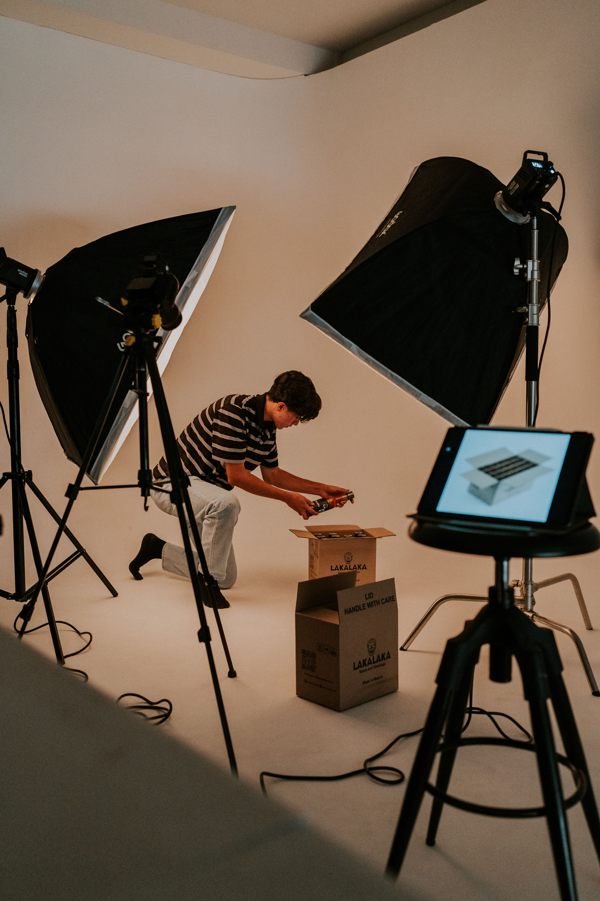
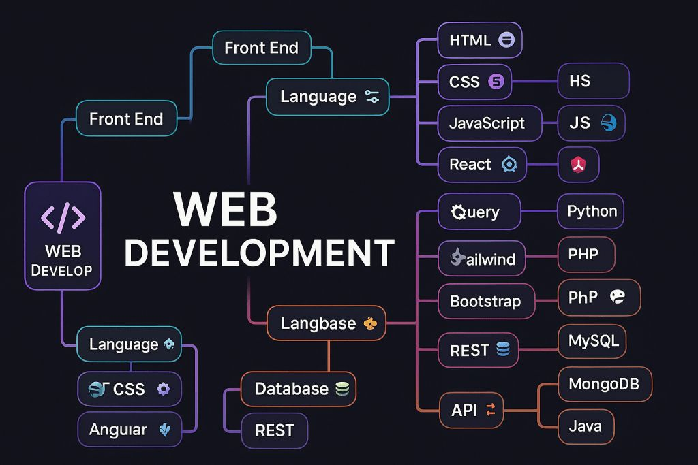

ABOUT US
Académie Royale Formation Action Succès (ARFAS) est une structure qui vise à développer les compétences professionnelles des étudiants, chercheurs d'emploi, entrepreneurs et travailleurs souhaitant se spécialiser dans les métiers du numérique.

.png)


Domaines de formation
marketing digital
on aide as la creation de strategies marketing en ligne
creation de contenu numerique

la creation de contenu comme videos infographies
infographie
.png)
on creer des visuels destines a la communication
Developpement web

on aide et aide a cree des site internet et application web
intelligence Artificielle
on aide a creer des agence IA pour vous aide
vision et objectifs
1 Former des professionnels directement opérationnels.
L'un des principaux objectifs d'ARFAS est de fournir des formations pratiques permettant aux apprenants d'être immédiatement efficaces dans leur domaine d'activité
2 Favoriser l'employabilité des jeunes Camerounais.
ARFAS cherche à réduire le chômage des jeunes en leur donnant des compétences recherchées par les entreprises.
3 Encourager la création d'entreprises numériques.
ARFAS souhaite développer l'esprit entrepreneurial chez les jeunes afin qu'ils deviennent des créateurs de richesses et d'emplois
4 Accompagner les apprenants vers les stages et l'insertion professionnelle.
ARFAS ne se limite pas à la formation. L'académie vise également à faciliter l'intégration professionnelle de ses apprenants.